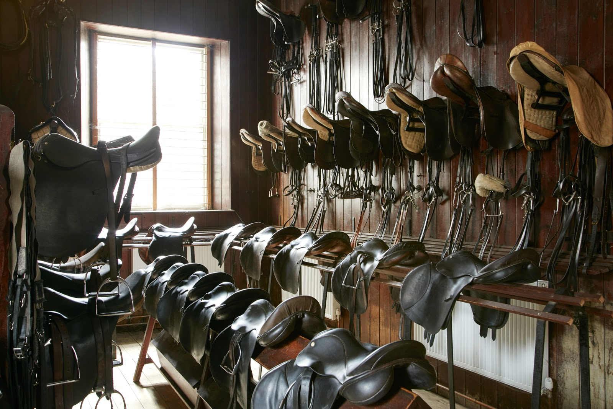
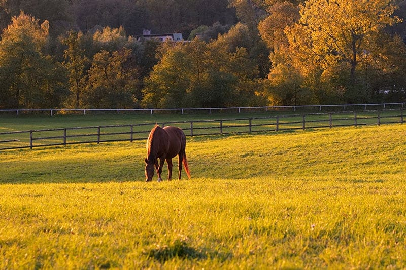

The whiteboard remembers less than everyone assumes it does.
A whiteboard in the tack room, a group chat nobody has time to scroll back through, a paper diary for the arena. It holds together, mostly, until two horses are booked into the same arena at once, or an owner calls to ask why nobody turned her horse out.
Every person in the yard works from a slightly different picture of the same day. Those small gaps are what turn into missed turnout, double bookings, and messages that arrive too late to matter.
You did not build this yard to spend your mornings solving the same small mystery again and again.
There is a way to see the whole place clearly, all at once, without adding yet another app that only manages half the problem.
Four steps from whiteboard to one live picture.
You describe the yard once. After that, everyone works from the same screen, on desktop or phone.
Set up your yard
Add stalls, paddocks, the field, arenas, the walker and the lunging circle. Register horses with their care plans.
Bring in your team
Invite managers, grooms, trainers, vets, farriers and owners. Choose what each role can see and change.
Run the day
Move horses, tick off tasks, book sessions and message, all on the same live picture.
Keep owners in the loop
Horse owners follow their own horse, send requests and get answers from the yard in the app. Fewer phone calls for everyone.
of the day
Every person in the yard, the same honest picture.
One place that finally sees the yard the way you do.
Yardsmith Stables brings together the physical side of the yard, which paddocks, arenas and horse walkers are free right now, with the human side, the tasks, the messages, and a clear view for owners of what is happening with their own horse.
Built by people who know a yard does not run on software, it runs on horses and the people looking after them. Yardsmith Stables just gives everyone the same honest picture of the day.
A yard that runs on what is true, not on what someone remembers.
Nothing dramatic. The small frictions simply stop. The arena gets booked before two people show up for it at once. A new hire knows what to do without asking around. An owner checks her phone instead of calling.
What is left is more time for the part of the job that needed a person all along, the horses, and the people who show up for them every day.
Follow a day in the yard →
Every yard is a little different. Yardsmith Stables is built to bend around that.
One core, five directions. Yardsmith Stables starts from the same foundation and grows into whichever shape your yard actually needs.
Is Yardsmith Stables right for your yard?
Tick what sounds like your yard.
Tell us about your yard, and we will show you the rest.
Whether you want a walkthrough of the product, a closer look at the business behind it, or simply to be kept informed as Yardsmith Stables develops, leave a few details and we will be in touch directly.